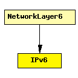

File: Network/IPv6/IPv6.ned
C++ definition: click here
Implements the IPv6 protocol.
An overview of the IPv6 implementation in the INET Framework is provided here.
The IPv6 protocol header is represented by the IPv6Datagram message class.
Interfacing with higher layer protocols
To send a packet over IPv6 from a higher layer protocol, the module should fill in an IPv6ControlInfo object, attach it to the packet with cMessage's setControlInfo() method, the send it to the IPv6 module.
When IPv6 sends up a packet to a higher layer protocol, it will also attach an IPv6ControlInfo to the packet, with the source and destination IPv6 address, etc. of the IPv6 datagram in which the packet arrived.
IPv6 can serve several higher-layer protocols. When delivering packets to them, the output gate is determined from the Protocol field in the IPv6 datagram class. The protocol-to-gateindex mapping must be given in the protocolMapping string parameter, in the following format:
protocolnumber:gateindex, protocolnumber:gateindex, ...
The recommended setting is:
That is, protocolMapping="6:0,17:1,46:2,89:3"
Routing and interfacing with lower layers
The routing table is stored in the module RoutingTable6. When a datagram needs to be routed, IPv6 queries RoutingTable6 for the output interface (or "port") and next hop address of the packet. This is done by directly calling C++ methods of RoutingTable6. No message exchange with RoutingTable6 takes place.
Routing protocol implementations can also query and manipulate the route table by calling RoutingTable6's methods in C++.
Performance model, QoS
In the current form, IPv6 contains a FIFO which queues up IPv6 datagrams; datagrams are processed in order. The processing time is determined by the procDelay module parameter.
See also: RoutingTable6, IPv6ControlInfo, IPv6NeighbourDiscovery, ICMPv6
Author: Andras Varga
The following diagram shows usage relationships between modules, networks and channels. Unresolved module (and channel) types are missing from the diagram. Click here to see the full picture.
If a module type shows up more than once, that means it has been defined in more than one NED file.
| NetworkLayer6 | Represents an IPv6 network layer (L3). |
| Name | Type | Description |
|---|---|---|
| procDelay | numeric const | |
| protocolMapping | string |
| Name | Direction | Description |
|---|---|---|
| transportIn [ ] | input | |
| transportOut [ ] | output | |
| queueIn [ ] | input | |
| queueOut [ ] | output | |
| icmpIn | input | |
| icmpOut | output | |
| ndIn | input | |
| ndOut | output |
simple IPv6 parameters: procDelay : numeric const, protocolMapping : string; gates: in: transportIn[]; out: transportOut[]; in: queueIn[]; out: queueOut[]; in: icmpIn; out: icmpOut; in: ndIn; out: ndOut; endsimple